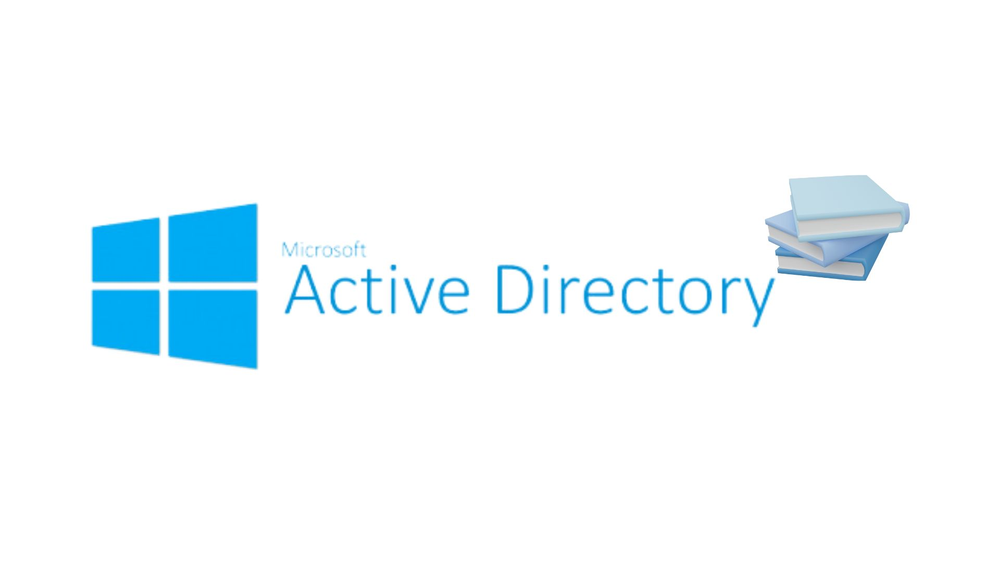

Mes Projets
Traitement des données
Mise en place et configuration d'un système de monitoring réseau avec Cacti

Gestion d'un Système de Bases de Données Mysql
Configuration et maintenance d'une infrastructure réseau, gestion des services et des utilisateurs.

Active Directory
Création d'une présence en ligne professionnelle et gestion de l'identité numérique.
Traitement des données
Description du Projet
Dans ce projet, j'ai configuré un environnement réseau virtuel avec virtualbox comprenant trois machines virtuelles : deux en réseau interne (Debian) et une en NAT (Ubuntu). J'ai assuré la connectivité entre ces machines via des routes configurées manuellement et la translation d'adresses réseau (NAT). J'ai également déployé l'outil de supervision Cacti pour surveiller les performances et l'état des équipements réseau.
Compétences Développées
- Administration réseau : Configuration des adresses IP, routage, et mise en place du NAT pour assurer la communication entre les machines virtuelles et l'accès à Internet.
- Supervision des systèmes : Installation, configuration et utilisation de Cacti pour suivre l'état des équipements.
- Administration système : Gestion des services critiques tels qu'Apache, MariaDB et PHP, et optimisation des configurations système.
- Gestion de projet IT : Structuration des étapes du projet, résolution de problèmes réseau et documentation claire des actions entreprises.
Galerie du Projet


Active Directory
Description du Projet
Ce projet consistait à configurer un environnement Active Directory sur une VM Windows Server 2016 pour centraliser la gestion des utilisateurs, des groupes, et des politiques réseau. L’objectif était de déployer un contrôleur de domaine, créer des unités d’organisation (UO) avec des groupes et des utilisateurs, ajouter des postes au domaine, et appliquer des stratégies de groupe (GPO) pour la gestion des accès.
Étapes clés du projet
1. Création et configuration des machines virtuelles :
- Installation de Windows Server 2016 sur VirtualBox et configuration des paramètres réseau.
- Clonage de la machine pour simuler un environnement réseau avec plusieurs serveurs.
2. Déploiement d'Active Directory :
- Installation des services de domaine Active Directory (AD DS) et promotion en contrôleur de domaine.
- Configuration du domaine rtdomtest.com avec gestion des unités d'organisation, groupes, et utilisateurs.
3. Ajout de postes au domaine :
- Modification des paramètres réseau pour joindre un poste client au domaine.
- Tests de connectivité et authentification avec les comptes utilisateur créés.
4. Gestion des GPO (Group Policy Object) :
- Création d'une stratégie de groupe pour restreindre l'accès au lecteur C: uniquement pour le groupe « Étudiant ».
- Application ciblée des politiques à un groupe spécifique via des permissions de filtrage
Compétences Développées
- Administration Windows Server : Installation et configuration de MySQL, gestion des utilisateurs et des permissions
- Gestion des utilisateurs et des groupes : Création d'unités d'organisation (UO), de groupes et d'utilisateurs dans Active Directory. Attribution de permissions et gestion des accès via des stratégies de groupe.
- Réseaux et connectivité : Configuration des adresses IP statiques et paramètres DNS pour assurer la connectivité au domaine. Résolution des problèmes liés aux SID des machines clonées.
- Supervision et sécurité : Application de GPO pour restreindre ou personnaliser les accès utilisateur. Tests de fonctionnalité et dépannage réseau dans un environnement simulé.
- Collaboration et documentation : Travail structuré basé sur des scénarios réalistes pour simuler un réseau d'entreprise. Rédaction de procédures détaillées pour garantir la reproductibilité.
Galerie du Projet
.jpg)
.jpg)